Part Workbench/es

Introducción
Las sólidas capacidades de modelado de FreeCAD se basan en la coleción de bibliotecas de OpenCASCADE (OCCT), un sistema CAD de calidad profesional que presenta una gran capacidad para la creación y manipulación avanzada de geometría 3D. El  Ambiente de Trabajo Pieza es una capa que se encuentra en la parte superior de las bibliotecas de la OCCT, que da al usuario acceso a las primitivas y funciones geométricas de la OCCT. Esencialmente, todas las funciones de dibujo 2D y 3D en cada ambiente de trabajo (
Ambiente de Trabajo Pieza es una capa que se encuentra en la parte superior de las bibliotecas de la OCCT, que da al usuario acceso a las primitivas y funciones geométricas de la OCCT. Esencialmente, todas las funciones de dibujo 2D y 3D en cada ambiente de trabajo ( Borrador, Croquizador,
Borrador, Croquizador,  DiseñoPieza, etc.), se basan en estas funciones expuestas por el ambiente de trabajo Diseño de Pieza. Por lo tanto, el Ambiente de Trabajo Diseño de Pieza se considera el componente central de las capacidades de modelado de FreeCAD.
DiseñoPieza, etc.), se basan en estas funciones expuestas por el ambiente de trabajo Diseño de Pieza. Por lo tanto, el Ambiente de Trabajo Diseño de Pieza se considera el componente central de las capacidades de modelado de FreeCAD.

El entorno de trabajo de piezas también permite crear objetos que no sean sólidos tales como caras y superficies, además de objetos con solo aristas o vértices. También proporciona diversas herramientas de uso general para la manipulación y validación de geometría, así como la creación de copias.
El  PartDesign Workbench utiliza un flujo de trabajo alternativo para la creación de sólidos. Para una explicación detallada de la diferencia entre Part Workbench y Part Design Workbench, consulte Part and Part Design.
PartDesign Workbench utiliza un flujo de trabajo alternativo para la creación de sólidos. Para una explicación detallada de la diferencia entre Part Workbench y Part Design Workbench, consulte Part and Part Design.

Herramientas
Barra de herramientas de sólidos
 Caja: Crea una caja.
Caja: Crea una caja.
- Cilindro: Crea un cilindro.

- Esfera: Crea una esfera.

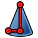
Cono: Crea un cono.

Torus: Crea un toroide.

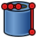
Tubo: Crea un tubo.

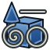
Primitive: Una herramienta para crear una de las siguientes primitivas:

- Plane: Crea un plano.

- Ellipsoid: Crea un elipsoide.

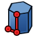
Prisma: Crea un prisma.

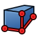
Wedge: Crea una cuña.

- Helix: Crea una hélice.

- Spiral: Crea una espiral.

- Circle: Crea un arco circular.

- Ellipse: Crea un arco elíptico.

- Point: Crea un punto.

- Line: Crea una línea.

- Polígono regular: Crea un polígono regular.

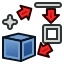
Shape Builder: Crea formas a partir de varias primitivas.

Barra de herramientas de piezas
- Nuevo boceto: Crea un nuevo croquis y abre el Diálogo del croquis para editarlo.

 Extrusión: Extruye caras planas.
Extrusión: Extruye caras planas.
- Revolve: Crea un sólido haciendo girar un objeto (no un sólido) alrededor de un eje.

- Mirror: Refleja el objeto seleccionado a través de un plano de simetría.

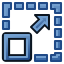
Scale: Escala una o más formas. introduced in 1.0

 Fillet: Redondea (sube) los bordes de un objeto.
Fillet: Redondea (sube) los bordes de un objeto.
- Chaflán: Hace un chaflán en los bordes de un objeto.

- Crea cara desde alambres: Crea una cara a partir de un conjunto de cables (contornos).

- Superficie reglada: Crea una superficie reglada.

- Loft: Barrido directo de un perfil a otro.

- Barrido: Barre uno o más perfiles a lo largo de una ruta.

- Sección: Crea una sección por la intersección de un objeto con un plano de sección.

- Secciones transversales...: Crea una o más secciones transversales a través de un objeto.


- Relleno 3D: Construye una figura paralela a cierta distancia de la original.
- Relleno 2D: Construye un cable paralelo a cierta distancia de un original, o amplía/contrae una cara plana.

- Espesor: Ahueca un sólido.

- Proyección sobre superficie: Proyecta un logotipo, texto o cualquier cara, cable o borde sobre una superficie.

- Establecer colores: Asigna colores a las caras individuales de los objetos.

Barra de herramientas para operaciones booleanas

- Hacer compuesto: Crea un compuesto a partir de los objetos seleccionados.
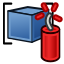
Explotar compuesto: Divide los compuestos.

- Filtro compuesto: Extrae las partes individuales de los compuestos.


- Operaciones Booleanas: Realiza operaciones booleanas sobre objetos.

 Cut: Corta un objeto de otro.
Cut: Corta un objeto de otro.
- Union: Fusiona dos o más objetos.

- Intersection: Extrae la parte común de dos objetos.


- Connect Shapes: Conecta interiores de objetos con paredes.
- Formas de incrustación: Incrusta un objeto con paredes dentro de otro objeto con paredes.

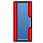
Cutout Shape: Crea un recorte en la pared de un objeto para otro objeto en la pared.


- Fragmentos booleanos: Crea todas las piezas obtenidas de operaciones booleanas.
- Cortar en rodajas: Corta y divide un objeto intersecándolo con otros objetos.

- Cortar en trozos compuestos: Divide un objeto intersecándolo con otros objetos.

- Operación booleana XOR: Elimina el espacio compartido por un número par de objetos.

- Comprobar geometría: Comprueba la geometría de los objetos seleccionados en busca de errores.

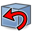
Anular: Elimina características de un objeto.

Otras herramientas
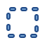
Selección de caja: Selecciona caras de un área rectangular.

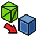
Forma a partir de malla: Crea formas a partir de objetos de malla.

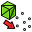
Puntos desde forma: Crea objetos de puntos a partir de objetos geométricos.

- Convertir a sólido: Crea sólidos a partir de objetos de forma.

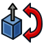
Formas inversas: Crea copias paramétricas con normales de cara invertidas a partir de objetos seleccionados.

- Copia
- Copia simple: Crea copias no paramétricas de objetos.

- Crear copia transformada: Crea una copia transformada de un objeto seleccionado.

- Copia de elemento de forma: Crea copias no paramétricas de subelementos: vértices, aristas y caras.

- Refinar la forma: Crea copias paramétricas con una forma refinada a partir de objetos seleccionados. Elimina los bordes innecesarios de las caras planas y cilíndricas.

- Establecer tolerancia: Crea una copia paramétrica de los objetos seleccionados con todas las tolerancias contenidas ajustadas al menos en un cierto valor mínimo. introduced in 1.1

- Persistent Section Cut: Crea cortes persistentes en objetos y ensamblajes.

- Adjunto: Adjunta un objeto a uno o más objetos.

Herramientas obsoletas
- Importar archivo CAD...: Importa desde archivos *.IGES, *.STEP o *.BREP. No disponible en 1.1 and above.

- Exportar archivo CAD...: Exporta a archivos *.IGES, *.STEP o *.BREP. No disponible en 1.1 and above.

Medida
La herramienta Medida estándar reemplaza las herramientas que se enumeran a continuación. introduced in 1.0

- Medición lineal: Crea una medición lineal. No disponible en 1.0 and above.

- Medir ángulo: Crea una medición angular. No disponible en 1.0 and above.

- Actualizar medida: Actualiza todas las medidas. No disponible en 1.0 and above.

- Borrar todo y Ver medida Borrar todo: Borra todas las medidas. No disponible en 1.0 and above.

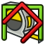
Mostrar todo y Ver medición Alternar todo: Muestra u oculta todas las medidas. No disponible en 1.0 and above.

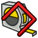
Alternar 3D: Muestra u oculta las medidas 3D. No disponible en 1.0 and above.

- Alternar Delta: Muestra u oculta las mediciones delta. No disponible en 1.0 and above.

Preferencias
- Preferencias: Preferencias disponibles para las Herramientas de Pieza (el ambiente de trabajo de Pieza también utiliza las Preferencias de PartDesign).
- Preferencias de importación-exportación: Preferencias disponibles para importar desde y exportar a diferentes formatos de archivo.
- Ajuste fino: Algunos parámetros extra para afinar el comportamiento de la Parte.


Guión
Ver Guiones Pieza.
Tutoriales
- Import from STL or OBJ : How to import STL/OBJ files in FreeCAD
- Export to STL or OBJ : How to export STL/OBJ files from FreeCAD
- Whiffle Ball tutorial : How to use the Part Workbench
- Creation and modification: New Sketch, Extrude, Revolve, Mirror, Scale, Fillet, Chamfer, Face From Wires, Ruled Surface, Loft, Sweep, Section, Cross-Sections, 3D Offset, 2D Offset, Thickness, Project on Surface, Appearance per Face
- Boolean: Compound, Explode Compound, Compound Filter, Boolean Operation, Cut, Union, Intersection, Connect Shapes, Embed Shapes, Cutout Shape, Boolean Fragments, Slice Apart, Slice to Compound, Boolean XOR, Check Geometry, Defeaturing
- Other tools: Box Selection, Shape From Mesh, Points From Shape, Convert to Solid, Reverse Shapes, Simple Copy, Transformed Copy, Shape Element Copy, Refine Shape, Set Tolerance, Persistent Section Cut, Attachment
- Preferences: Preferences, Fine tuning
- Getting started
- Installation: Download, Windows, Linux, Mac, Additional components, Docker, AppImage, Ubuntu Snap
- Basics: About FreeCAD, Interface, Mouse navigation, Selection methods, Object name, Preferences, Workbenches, Document structure, Properties, Help FreeCAD, Donate
- Help: Tutorials, Video tutorials
- Workbenches: Std Base, Assembly, BIM, CAM, Draft, FEM, Inspection, Material, Mesh, OpenSCAD, Part, PartDesign, Points, Reverse Engineering, Robot, Sketcher, Spreadsheet, Surface, TechDraw, Test Framework
- Hubs: User hub, Power users hub, Developer hub